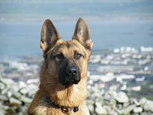

Általános megjelenéseh
A német juhászkutya egy középnagy és erős kutyafajta. Lehet hosszú- és rövid szőrű. Habár a fekete és a barna szín a leginkább meghatározó, a német juhászkutya számos színben és mintában előfordul, de ezek közül nem mindegyik elfogadott az FCI által. A két színpáros lehet fekete és vörösesbarna, fekete és vörös, fekete és barna, fekete és ezüst, fekete és krémszínű, fekete és sárgásbarna vagy ezüst és barna.
Intelligens, mozgékony, kiegyensúlyozott. Szinte mértéktelen a temperamentuma, ennek ellenére engedelmes, figyelmes, elfogulatlan, a feladatokat jókedvűen végzi. Kellemes társ a háznál, imádja a gyermekeket, barátságos a háziállatokhoz. Ideális munkakutya, nagyon nehéz helyettesíteni. A szépségideálokat kergető tenyésztőknek már von Stephanitz is azt válaszolta: "A juhászkutya munkakutya, és maradjon is munkakutya!"
Vérmérséklete
Igen értelmes és munkaszerető fajta. Észreveszi, sőt meg is érti, mi zajlik a környezetében, s természetes feladatának tekinti a családtagok, az otthon és család tulajdonának védelmét. Rendkívül hűséges, gyengéd, barátságos és magabiztos. Noha a család minden tagjával a gyerekekkel is jó viszonyban van, általában különösen erősen kötődik egyvalakihez (tipikusan "egygazdás"). Nem hagyja magát idegenektől megvesztegetni. Kiváló a szimata. Szőrzete minden időjárásban megfelelő védelmet nyújt, ezért a német juhászkutya nyugodtan tartható szabadtéri kifutóban is. Megjegyzendő, hogy társaság tekintetében más kutyák nem helyettesíthetik a gazda szerepét.
A német juhászkutya életének központjában a gazda áll, és minden igyekezetével azon van, hogy a kedvében járjon. A fajta nem való olyan embereknek, akik sokat vannak távol otthonról, ha ugyanis nem kap elég figyelmet a gazdájától, úgy érzi, hogy büntetésben van. A német juhászkutya nagyon jól kijön a gyerekekkel, feltéve, hogy azok tisztelettel bánnak vele. Mindenképpen tudni kell róla, hogy ha a barátokkal folytatott játék eldurvul, ez a kutya a családhoz tartozó gyermekek védelmére kel. Az idegenekkel szemben óvatos, de ha a gazda azt jelzi, hogy minden rendben, akkor nem viselkedik ellenségesen velük. A család barátait lelkesen fogadja. A megfelelően szocializált német juhászkutyának sem fajtársaival, sem más háziállatokkal nem lehet gondja.
Adatok
| Német juhászkutya adatai | ||
| Származási hely | Németország | |
| Magasság | kan: 60-66 cm szuka: 55-61 cm |
|
| Súly | kan: 30-40 kg szuka: 22-32 kg |
|
| Szőrzet | Kettős szőrzet, közepesen hosszú, egyenes, sűrű, kemény | |
| Szín | Fekete cservörössel ,vörös, arany vagy világosszürke jegyekkel, egyszinű fekete vagy szürke | |